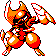
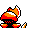

#224
Bisharp
DarkSteel
It leads groups of PAWNIARD and seeks sharp blades It finishes foes with a single clean slash
Base stats Total 420
HP65
Attack125
Defense100
Speed70
Special60
Details
- Species
- Sword
- Height
- 5'03"
- Weight
- 154.3 lb
- Catch rate
- 45
- Base exp
- 172
- Growth
- Medium Fast
Level-up moves
LevelMoveType
StartScratchNormal
StartLeerNormal
StartMetal ClawSteel
StartCrunchDark
Lv 6LeerNormal
Lv 13Fury AttackNormal
Lv 17Metal ClawSteel
Lv 22SlashNormal
Lv 30CrunchDark
Lv 38Swords DanceNormal
Lv 46Iron TailSteel
Lv 54Hyper BeamNormal
Evolution
Evolves from Pawniard
Where to find
TM / HM
TM03 Swords DanceTM04 CrunchTM06 ToxicTM09 Take DownTM10 Double-EdgeTM15 Hyper BeamTM16 Metal ClawTM28 DigTM31 MimicTM32 Double TeamTM34 BideTM39 SwiftTM44 RestTM45 Thunder WaveTM48 Rock SlideTM50 SubstituteHM01 Cut